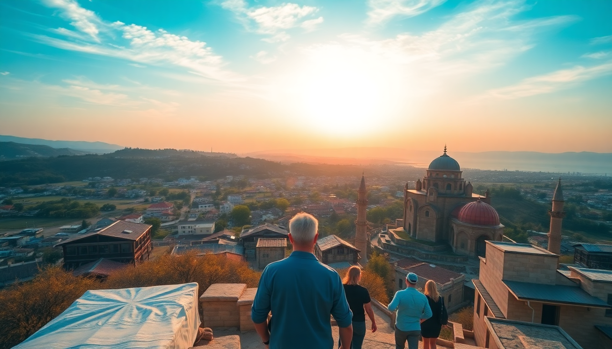

10 Day Turkey Itinerary: Istanbul, Cappadocia & Antalya

We landed in Istanbul on a Tuesday morning, and ten days later we left from Antalya with sore feet, full camera rolls, and a clear ranking of which baklava shop is worth the line. This itinerary covers three distinct regions: the city chaos of Istanbul, the lunar landscapes of Cappadocia, and the coastal calm of Antalya. It’s tight, but it works if you move smart and book ahead.
How many days should you spend in each city?
Split it 4-3-3. Four nights in Istanbul gives you time to hit the big sights without rushing, plus a day for a Bosphorus cruise. Three nights in Cappadocia means two full days for balloons, valleys, and underground cities. Three nights in Antalya lets you explore the old town and either relax on the beach or take a day trip to a nearby ruin.
We flew between cities — Istanbul to Kayseri (Cappadocia’s airport), then Kayseri to Antalya. Turkish Airlines and Pegasus both run multiple daily flights. Book domestic legs at least three weeks out to keep fares under $50 per person.
What are the must-do things in Istanbul?
Start in Sultanahmet. The Hagia Sophia and Blue Mosque face each other across a park, and you can do both in one morning. Go to Hagia Sophia right when it opens at 9:00 AM to beat the tour groups. The Basilica Cistern is a five-minute walk from there — worth the entry fee for the eerie lighting and the Medusa heads.
Skip the Grand Bazaar unless you enjoy aggressive sales pitches. Instead, head to the Spice Bazaar in Eminönü, buy some dried apricots and Turkish delight from Kurukahveci Mehmet Efendi (they’ve been roasting coffee since 1871), and walk down to the water for a ferry ride.
For dinner, walk into Kadıköy on the Asian side. Take the ferry from Eminönü (15 minutes, 15 lira), and eat at Çiya Sofrası — a no-frills spot serving regional dishes from across Anatolia. Their lamb with quince is the best thing I ate in Turkey.
- Hagia Sophia: 9 AM opening, allow 90 minutes
- Basilica Cistern: book online to skip the queue
- Spice Bazaar: better for souvenirs than the Grand Bazaar
- Kadıköy: ferry from Eminönü, eat at Çiya Sofrası
- Bosphorus cruise: public ferries from Eminönü to Üsküdar cost almost nothing
Is the hot air balloon ride in Cappadocia worth it?
Yes, but only if you book with a reputable operator. We flew with Butterfly Balloons and paid $180 per person — not cheap, but they have a perfect safety record and the pilot landed us right next to a truck full of fresh simit (Turkish bagels). The flight lasts about an hour, and you’re up before sunrise. Bring a jacket; it’s cold at 3,000 feet even in summer.
If balloons aren’t your thing, the valleys are just as impressive from the ground. Rent a car or hire a driver for a day. Hit Rose Valley for the hike to the Çavuşin Church (frescoes from the 5th century, no crowds), and Love Valley for the absurd rock formations. Skip the Göreme Open Air Museum — it’s packed with buses and the entry fee is steep for what’s essentially a cluster of rock-cut churches.
We stayed at Mithra Cave Hotel in Göreme. The rooms are actual cave dwellings, the rooftop terrace faces the balloons at dawn, and the owner brings you fresh tea while you watch the sunrise. Book the suite with the sunken bathtub.
- Butterfly Balloons: $180, includes champagne and a medal
- Rose Valley: free to hike, Çavuşin Church is a hidden gem
- Love Valley: best light at golden hour
- Mithra Cave Hotel: cave rooms, rooftop terrace, book direct for best rate
- Ürgüp: 10 minutes from Göreme, better restaurants like Sofra
What’s the best way to see Antalya in two days?
Base yourself in Kaleiçi, the old town. We stayed at Tuvana Hotel — a converted Ottoman mansion with a courtyard pool and a location that puts you within walking distance of everything. The Hadrian’s Gate is a three-minute walk, and the Karaalioğlu Park overlooks the harbor.
Day one: walk the old town in the morning, then take the tram to Konyaaltı Beach for the afternoon. The beach is pebbly, but the water is clear and the mountains behind you make the view. Rent a sunbed for 20 lira and order ayran from the beach cafe.
Day two: drive 45 minutes to Olympos and the Chimera flames — natural gas vents that have been burning for thousands of years. The hike up is steep (15 minutes, wear sneakers), but the flames flicker out of the rocks at night. Bring a headlamp.
If you have a third day, book a boat tour from the Old Harbor in Kaleiçi. They run four-hour trips along the coast, stop at a few swimming coves, and include lunch. We used Yosun Boat Tours and paid $25 per person.
- Tuvana Hotel: courtyard pool, walking distance to Hadrian’s Gate
- Konyaaltı Beach: tram from Kaleiçi, pebbly but swimmable
- Chimera flames: night visit, bring a headlamp
- Yosun Boat Tours: $25, lunch included, leaves from Old Harbor
- Olympos: ruins and beach combined, but skip the beach if you’re short on time
How do you get between cities efficiently?
Fly. The train from Istanbul to Cappadocia takes 12 hours and the bus is 10. We flew Istanbul to Kayseri (1.5 hours, $45 on Pegasus), then Kayseri to Antalya (1 hour, $35 on Turkish Airlines). Both airports have shuttle buses to the city centers — Havaş runs reliable services from Kayseri to Göreme for about $5.
For airport transfers in Istanbul, use the Havaist buses from the airport to Sultanahmet. They cost $3 and run every 30 minutes. Taxis are three times the price and often try to overcharge tourists.
- Pegasus Airlines: budget carrier, book online
- Havaş shuttle: Kayseri to Göreme, $5, leaves every hour
- Havaist bus: Istanbul Airport to Sultanahmet, $3
What should you eat in each city?
Istanbul is about street food. Get a balık ekmek (fish sandwich) from the boats under the Galata Bridge — it’s messy, cheap, and the best meal you’ll have for $3. Try midye dolma (stuffed mussels) from a street cart in Kadıköy; vendors sell them by the dozen.
In Cappadocia, go for testi kebab (pottery kebab) at Dibek in Göreme. They break the clay pot at your table and pour the stew over rice. It’s a tourist thing, but it’s done well here.
Antalya’s food scene is more seafood. 7 Mehmet in Kaleiçi serves grilled sea bass and a meze plate that changes daily. The octopus salad is worth the splurge.
- Balık ekmek: Galata Bridge, $3
- Midye dolma: Kadıköy street carts, 10 lira each
- Dibek: testi kebab, Göreme
- 7 Mehmet: grilled sea bass, Kaleiçi
FAQ
Is it safe to travel to Turkey right now? Yes, for standard tourist areas. We felt safe in all three cities. Avoid the Syrian border region (way east) and be aware of pickpockets in crowded tourist spots like the Spice Bazaar and on trams in Istanbul. Keep your wallet in a front pocket and you’ll be fine.
Do I need a visa for Turkey? Most nationalities (US, UK, Canada, Australia) need an e-Visa. Apply at evisa.gov.tr — it costs $50 for US citizens and takes five minutes. Print the approval or save it on your phone. You’ll show it at passport control.
What’s the best time of year for this itinerary? April-May or September-October. Summer (June-August) in Antalya is brutally hot — 40°C (104°F) is common. Cappadocia gets crowded in July and August, and balloon flights cancel more often due to wind. Spring and fall give you mild weather and thinner crowds.
Conclusion
- Fly between cities to save time; book domestic flights early
- Stay in Sultanahmet (Istanbul), Göreme (Cappadocia), and Kaleiçi (Antalya) for walkable bases
- Eat street food in Istanbul, testi kebab in Cappadocia, and seafood in Antalya
- Skip the Grand Bazaar and Göreme Open Air Museum — they’re overcrowded and overpriced
- Book the balloon ride with Butterfly Balloons and the Chimera visit at night